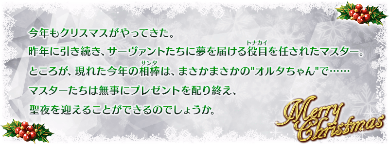
◆活動舉辦期間◆
2016年11月28日(一) 18:00～12月7日(三) 12:59
◆活動概要◆
舉辦期間限定活動｢第二代是Alter醬 ～2016聖誕節～｣！
活動期間中，會在管理室(ターミナル)出現活動關卡！
除了能享受故事的主線關卡逐日開放外，通過第一夜後會開放可反覆刷來獲得活動道具的自由關卡。
挑戰活動關卡收集「奇跡襪子」，從貞德・Alter・聖誕・Lily收到聖誕禮物吧！
另外，在通過主線關卡第七夜後，用從禮物陣容入手「白銀交換券」交換的話，貞德・Alter・聖誕・Lily正式加入。
推進活動，取得「★4(SR)貞德・Alter・聖誕・Lily」吧！
◆活動参加條件◆
只有通過「第一特異點 邪龍百年戰爭 奧爾良」的Master才能參加
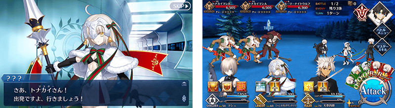
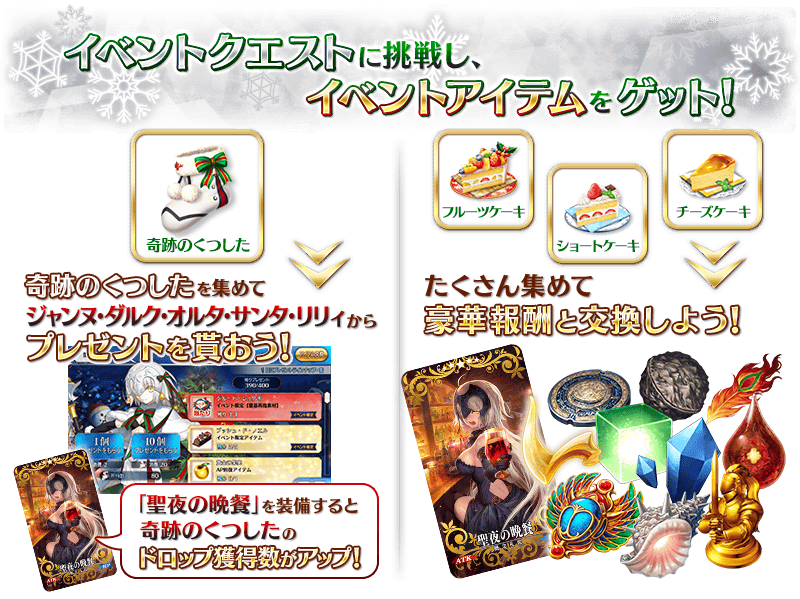
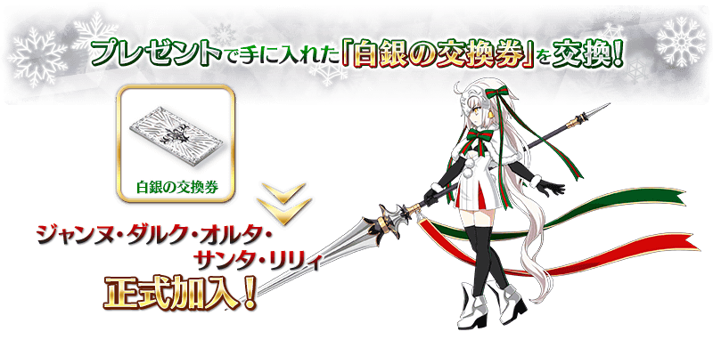
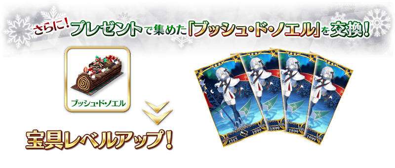
※「白銀交換券」與貞德・Alter・聖誕・Lily的交換在主線關卡第七夜通過後開放。
※「樹幹蛋糕」與貞德・Alter・聖誕・Lily的交換在貞德・Alter・聖誕・Lily正式加入後開放。
能享受故事的主線關卡會逐日開放。
另外，通過主線關卡第一夜的話，會開放能反覆刷來獲得活動道具的自由關卡。
| 關卡名 | 時間表 |
|---|---|
| 主線關卡 第一夜 | 11月28日(一) 18:00～ 12月7日(三) 12:59 |
| 主線關卡 第二夜 | 11月28日(一) 23:00～ 12月7日(三) 12:59 |
| 主線關卡 第三夜 | 11月29日(二) 23:00～ 12月7日(三) 12:59 |
| 主線關卡 第四夜 | 11月30日(三) 23:00～ 12月7日(三) 12:59 |
| 主線關卡 第五夜 | 12月1日(四) 23:00～ 12月7日(三) 12:59 |
| 主線關卡 第六夜 | 12月2日(五) 23:00～ 12月7日(三) 12:59 |
| 主線關卡 第七夜 | 12月3日(六) 23:00～ 12月7日(三) 12:59 |
在活動關卡收集「奇跡襪子」，從貞德・Alter・聖誕・Lily收到聖誕禮物吧！
禮物是每個陣容會放入1個大獎道具。
抽到大獎道具，實行「禮物重置」的話，會補充新的大獎道具。
有大獎道具陣容有6次份！
收到大獎道具點擊「禮物重置」鍵，補充大獎道具吧！
※第7次以後不會補充大獎道具及「黄金の果実」「白銀の果実」。
※如果入手陣容內的全道具才能進行「禮物重置」。
另外，收集只能在禮物入手的道具「樹幹蛋糕」可用來交換貞德・Alter・聖誕・Lily的寶具等級提升等豪華道具。
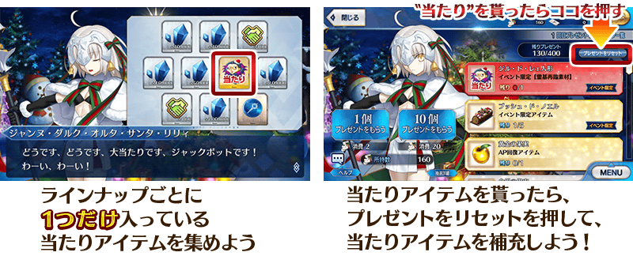
◆禮物陣容◆
|
【大獎道具】 【活動道具】 【技能強化＆靈基再臨素材】 【技能強化素材】 【其他道具】 |
◆超值攻略方法・其1◆
將特定的Servant編入隊伍的話，「水果蛋糕」「草莓蛋糕」「起司蛋糕」的掉落獲得數提升！
【對象Servant】
阿斯忒里歐、天草四郎、伊絲塔、牛若丸、Emiya、子吉爾、貞德、貞德〔Alter〕、貞德・Alter・聖誕・Lily、咒腕的哈桑、吉爾・德・雷(Caster)、俵藤太、風魔小太郎、瑪琇・基利艾拉特、瑪塔・哈里、雷奧尼達一世
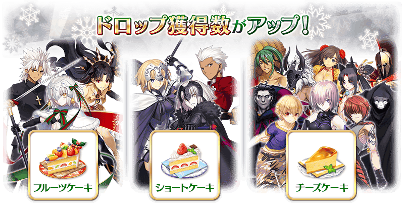
◆超值攻略方法・其2◆
裝備能在活動道具交換入手的活動限定概念禮裝「聖夜の晩餐」的話，活動道具「奇跡襪子」的掉落獲得數提升。
※請注意在各關卡的道具掉落率並非100%。
◆超值攻略方法・其3◆
裝備期間限定概念禮裝的話，「水果蛋糕」「草莓蛋糕」「起司蛋糕」各自的獲得數提升。
※請注意在各關卡的道具掉落率並非100%。
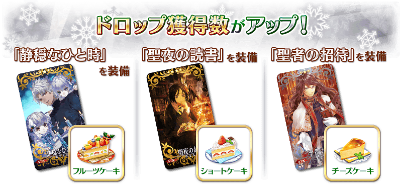
| 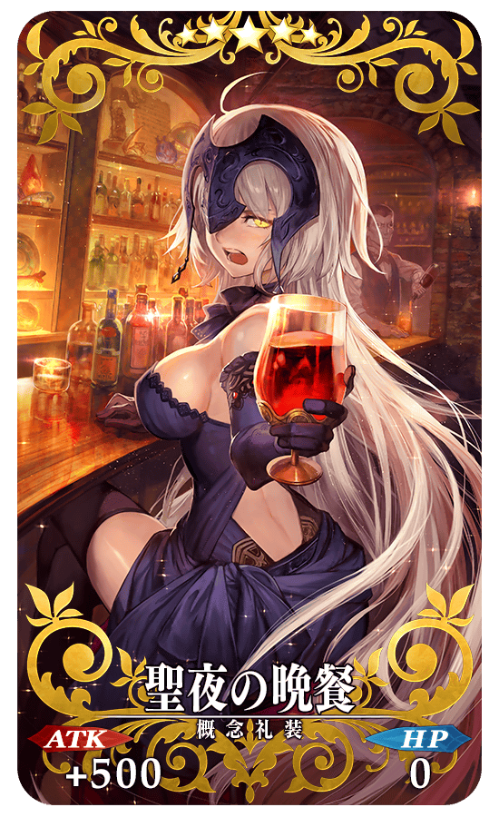 |
★★★★★SSR |
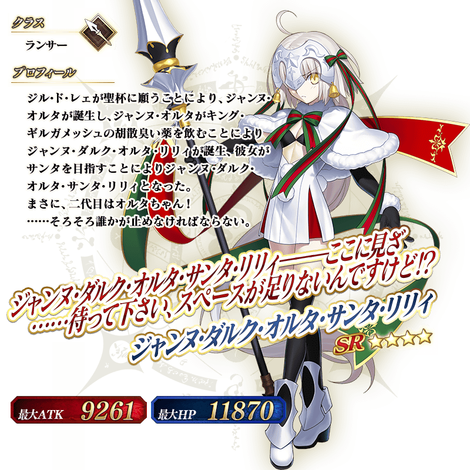
◆關於貞德・Alter・聖誕・Lily的入手、育成◆
貞德・Alter・聖誕・Lily在主線關卡第一夜通過期間限定加入。
另外，在主線關卡第七夜通過後，用禮物第5次的大獎道具「白銀交換券」在「活動道具交換」交換的話，才會正式加入。
貞德・Alter・聖誕・Lily的靈基再臨素材「吉爾・德・雷玩偶」可在禮物第1～4次的大獎道具入手。
關於寶具等級提升，用能在禮物入手的「樹幹蛋糕」在「活動道具交換」交換貞德・Alter・聖誕・Lily。
※「樹幹蛋糕」與貞德・Alter・聖誕・Lily的交換在貞德・Alter・聖誕・Lily正式加入後開放。
※活動結束後，期間限定加入中的貞德・Alter・聖誕・Lily會脫離，但若有通過主線關卡第七夜，在活動道具交換期間中「白銀交換券」交換的話貞德・Alter・聖誕・Lily會正式加入。
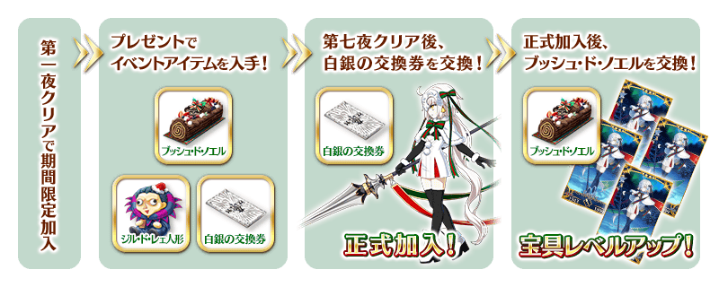
◆靈基再臨◆
使用在活動期間中的禮物外無法入手的「吉爾・德・雷玩偶(ジル･ド･レェ人形)」，重複4次靈基再臨的話，卡面會有所變化！
※貞德・Alter・聖誕・Lilyは不會隨靈基再臨使戰鬥角色的外觀變化。
◆交換方法◆
交換期間：2016年11月28日(一) 18:00～12月14日(三) 13:59
※交換期間結束後「樹幹蛋糕」「水果蛋糕」「草莓蛋糕」「起司蛋糕」「奇跡襪子」會消失。
從達文西工房内的「活動道具交換」，用收集來的活動專用道具來交換以下的道具。
◆能用樹幹蛋糕(ブッシュ･ド･ノエル)交換的道具◆
|
【活動限定Servant】 【技能強化＆靈基再臨素材】 【其他道具】 |
◆能用水果蛋糕(フルーツケーキ)交換的道具◆
|
【活動限定概念禮裝】 【技能強化＆靈基再臨素材】 【靈基再臨素材】 【其他道具】 |
◆能用草莓蛋糕(ショートケーキ)交換的道具◆
|
【活動限定概念禮裝】 【技能強化＆靈基再臨素材】 【靈基再臨素材】 |
◆能用起司蛋糕(チーズケーキ)交換的道具◆
|
【活動限定概念禮裝】 【技能強化＆靈基再臨素材】 |
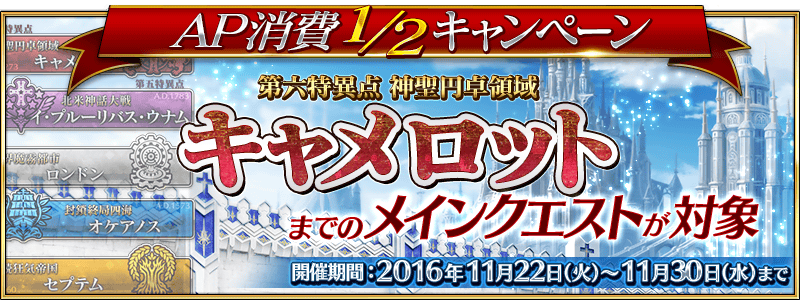
期間限定活動｢第二代是Alter醬 ～2016聖誕節～｣是只有通過「第一特異點 邪龍百年戰爭 奧爾良」的Master才能參加的活動。
因此，舉辦到卡美洛為止的主線關卡AP消費1/2宣傳活動。
無論如何藉此機會推進主線關卡，參加活動吧！
◆舉辦期間◆
2016年11月22日(二) 18:00～11月30日(三) 13:59
◆對象關卡◆
冬木、奧爾良、羅馬七省、歐開諾斯、倫敦、合眾為一、卡美洛內全部的主線關卡
※冬木、奧爾良、羅馬七省、歐開諾斯、倫敦、合眾為一、卡美洛内的自由關卡、幕間物語為對象外。
限定從「au遊戲」內的宣傳活動頁進入的玩家，實施課金金額返還15%錢包點數的宣傳活動。
詳情請從下列宣傳活動頁確認。
◆舉辦期間◆
2016年11月27日(日) 23:00～12月4日(日) 22:59
◆宣傳活動頁面◆
https://game.auone.jp/campaign/present_15percent_20161128/?rf=CP00251
※只限從Android裝置閲覧。
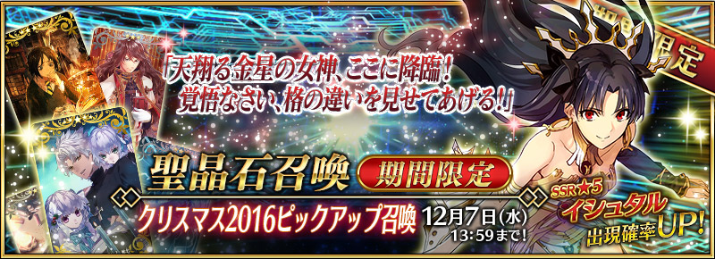
◆「聖誕節2016Pick Up召喚」期間◆
期間：2016年11月28日(一) 18:00～12月7日(三) 12:59
以期間限定舉辦「聖誕節2016Pick Up召喚」！
在主線關卡第七章活躍的Servant「★5(SSR)伊絲塔」以期間限定登場！
詳情請在聖晶石召喚畫面左下的召喚詳細確認。
※伊絲塔在Pick Up召喚期間結束後，不會追加到故事召喚。
裝備期間限定概念禮裝「★5(SSR)静穏なひと時」「★4(SR)聖夜の読書」「★3(R)聖者の招待」的話，活動専用道具的掉落獲得數提升。
※「★3(R)聖者の招待」在Pick Up期間中，也能在友情點數召喚獲得。
Pick Up期間中，期間限定Servant、期間限定概念禮裝的出現機率提升！
10次召喚中★4(SR)以上1張確定和★3(R)以上的Servant1位確定！
※★4(SR)以上確定包含Servant和概念禮裝。
※所謂「出現機率UP」意指比同稀有度的Servant出現機率更高的設定。
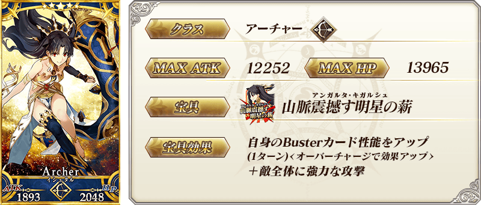
| 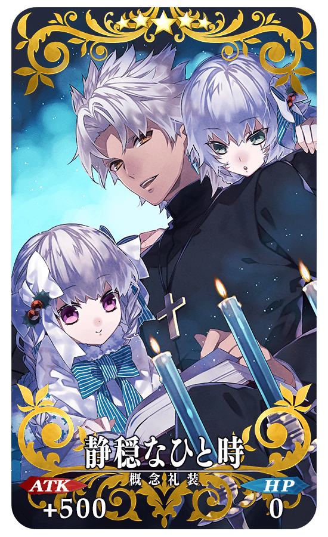 |
★★★★★SSR 静穏なひと時 ATK 500(最大：2000) HP 0 技能 自身的Quick卡性能提升10%＆Arts卡性能提升10%＆NP獲得量提升10% + 水果蛋糕的掉落獲得數增加1個【『第二代是Alter醬 ～2016聖誕節～』活動期間限定】 |
| 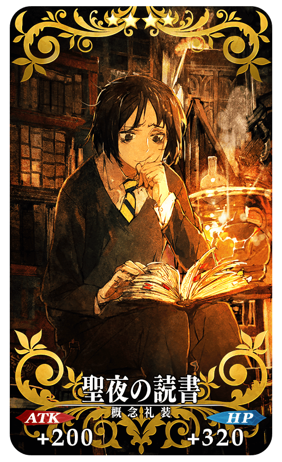 |
★★★★SR 聖夜の読書 ATK 200(最大：750) HP 320(最大：1200) 技能 自身的NP獲得量提升15%＆寶具威力提升15% + 草莓蛋糕的掉落獲得數增加1個【『第二代是Alter醬 ～2016聖誕節～』活動期間限定】 |
| 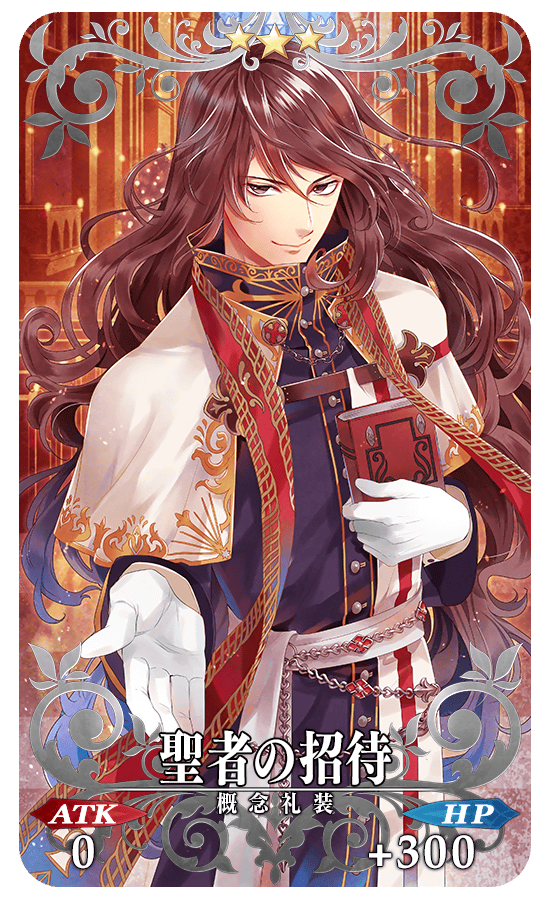 |
★★★R 聖者の招待 ATK 0 HP 300(最大：1500) 技能 自身的防禦力提升3%＆賦予傷害減免100狀態 + 起司蛋糕的掉落獲得數增加1個【『第二代是Alter醬 ～2016聖誕節～』活動期間限定】 |
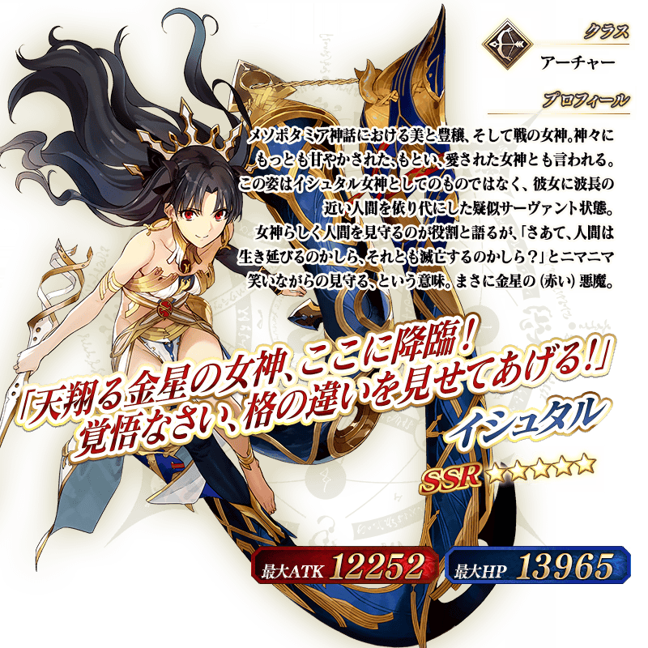